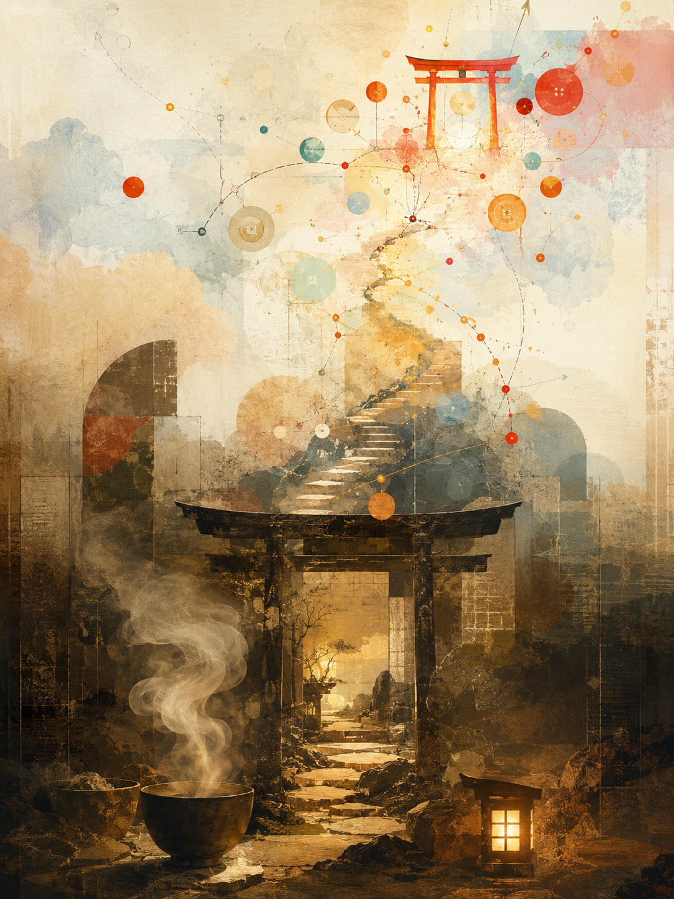

老成寺は、坂の下にある。
門は低く、鐘は小さい。境内には、いつも湯気が立っている。
そこでは誰も急がない。湯を沸かし、茶を飲み、座る。今日やらなくていいことを、今日やらないための寺である。
本堂の前には、古い札が掛かっている。
走る前に座れ。決める前に食え。夜に悟るな。
老成寺の和尚は、たいしたことを言わない。
「まあ、まず水でも飲みなさい」
「その話は昼にしなさい」
「帰って寝れば、明日の始点は変わります」
それだけである。だが、それだけで救われる日がある。
寺の裏には、細い石段がある。苔が生えていて、少しだけ危ない。その石段を登ると、小さな神社がある。
少年神社である。
鳥居は妙に赤い。鈴は少しうるさい。賽銭箱の横には、なぜかボタンがある。
押すと、何かが始まる。何が始まるかは、日による。
地図が開く日もある。自転車が出る日もある。カップ麺が分解される日もある。ローカルで動く、よくわからない3Dの何かが立ち上がる日もある。
少年神社の神様は、落ち着きがない。
「それ、作れるんじゃない？」
「押してみたら？」
「音も入れようぜ」
「Google Mapでチャリ乗れないの、変じゃね？」
老成寺の和尚が聞いたら、眉をひそめる。だが止めはしない。止めすぎると、人は枯れるからだ。
少年神社の神様も、寺を馬鹿にはしない。遊びすぎると、人は散るからだ。
だからこの町では、昔から決まりがある。
朝は老成寺に寄る。湯を沸かし、飯を食い、今日の身体を確認する。
昼は少年神社へ行ってもよい。押す。試す。作る。世界を、まだゲームとして扱う。
夜は老成寺へ戻る。火を落とし、画面を閉じ、余計な意味を畳む。明日の自分に場所を返す。
大事なのは、どちらかを選ぶことではない。
老成寺だけでは、人生は安全すぎる。少年神社だけでは、人生は眩しすぎる。
座れるけど、まだ押せる。戻れるけど、まだ行ける。老いているのに、まだ少し馬鹿でいられる。
そのくらいが、たぶんちょうどいい。
老成寺に住み、少年神社へ散歩する。
今日も湯を沸かす。今日もボタンが光っている。